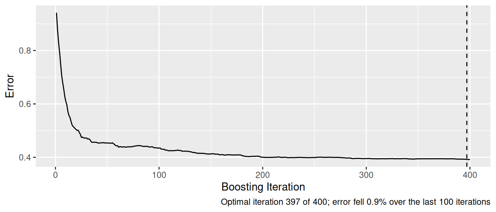
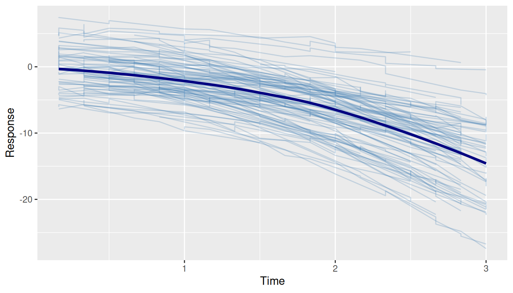
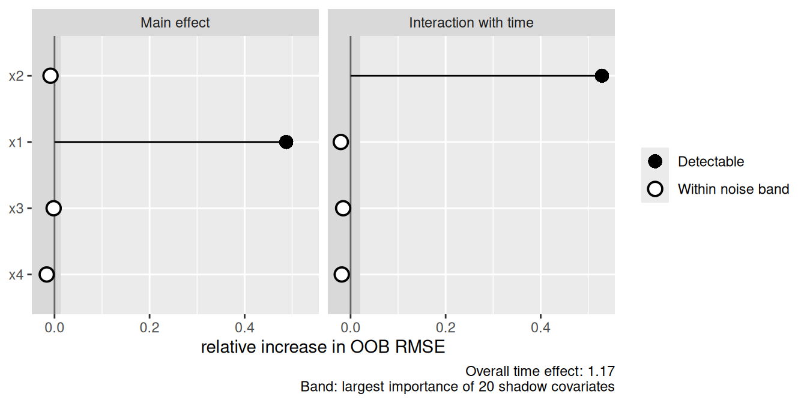
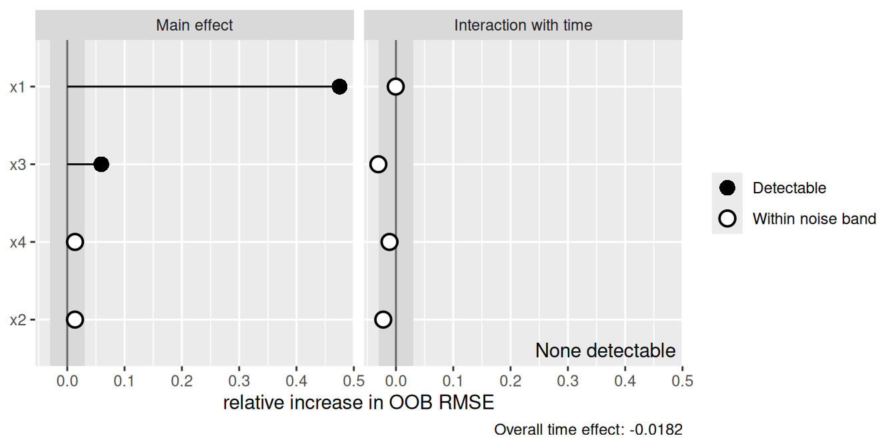
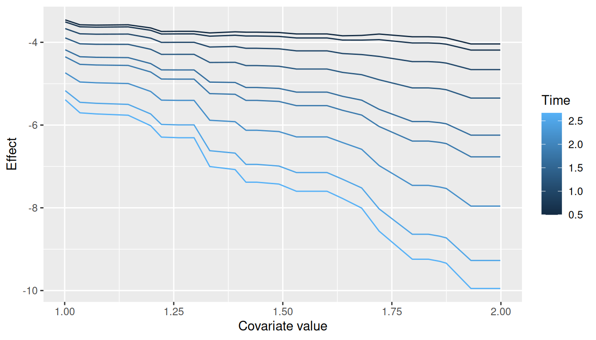
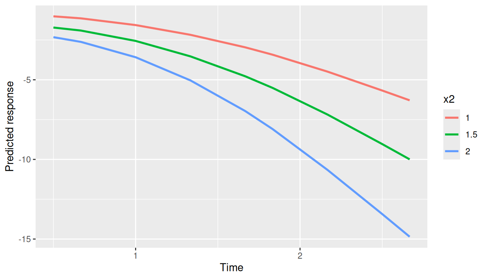
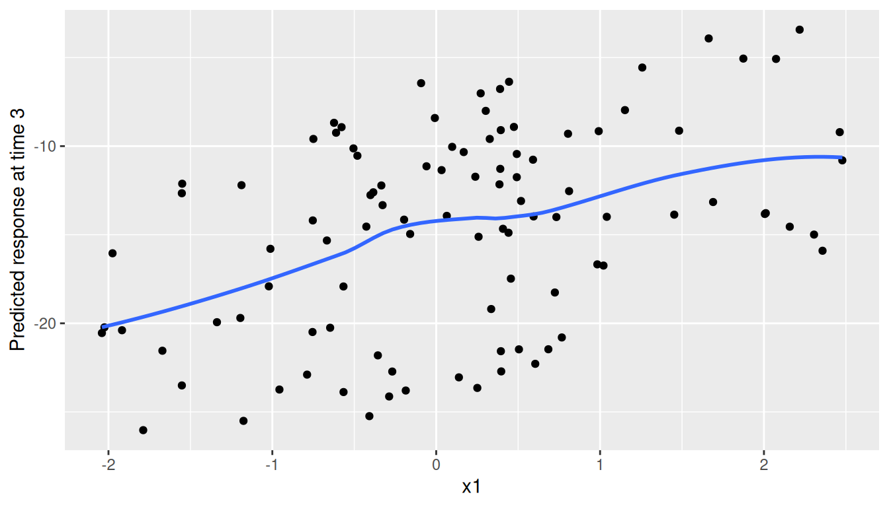

library(ggBoostedTrees)
library(ggplot2)
set.seed(11)
sim <- boostmtree::simLong(n = 100, n.time = 6, model = 2)$data.list
x <- boost_shadow(sim$features, sim$id)
fit <- boostmtree::boostmtree(
x = x, tm = sim$time, id = sim$id, y = sim$y,
M = 400, nu = 0.25, cv.flag = TRUE, verbose = FALSE
)
c(m.opt = fit$m.opt, M = fit$M)
#> m.opt M
#> 397 400Four Figures From One boostmtree Fit
2026-11-19
Source:vignettes/articles/reading-boostmtree-figures.qmd
A longitudinal boosted-tree analysis is usually reported with four figures: the subjects’ trajectories, which covariates matter, how the important ones shape the trajectory, and what the model predicts at a landmark time. This article builds each one from a single boostmtree fit, says what it is asking, and says how to read the answer. All four start from the same fit; no figure refits the model.
The fit
We simulate 100 subjects with up to six visits each. simLong() model 2 builds the response as 2.5 x1 - 1.2 x3 - 0.2 x4 plus a term in time^2 x2^2. So x1 shifts a subject’s whole trajectory, while x2 enters only through time: it changes the shape of the trajectory, not its starting level. x3 and x4 enter with smaller coefficients. Knowing the truth lets us check what each figure finds, and what it misses.
Four settings matter here.
-
boost_shadow()adds five shuffled copies of each covariate, 20 columns in all, before fitting. They carry no signal and give figure B its noise reference; the section on that figure explains how. They cost fitting time and, being noise the trees can split on, a little accuracy. -
cv.flag = TRUEis needed for two of the figures below: variable importance is computed from the out-of-bag subjects that cross-validation sets aside, and the fixed-time prediction uses the cross-validated number of iterations. - The seed is set with
set.seed(), notboostmtree.control(seed = ). A fixed control seed is passed unchanged to every tree, so every tree draws the same subsample and most subjects are never out of bag. Their out-of-bag predictions never move, and importance is computed from the few that are. - The fit has to have converged before any figure below means anything. The next section checks it.
Before the figures: did it converge?
Boosting adds small trees one at a time, and cross-validation records the out-of-bag error after each. m.opt is the step where that error was lowest. Draw the path:
autoplot(gg_boost_error(fit))
Reading it. The error should fall steeply and then flatten. If m.opt sits well inside M, the minimum was found. If m.opt equals M, as it does here, the error was still going down when boosting stopped, and the question is by how much. The caption answers that: it gives the error’s change over the last quarter of the iterations. Here it fell 11% between steps 100 and 400 but only about 1% over the last 100 steps: the curve has flattened, and more steps would change the figures below very little. A curve still falling steeply at M is a fit to refit with a larger M or a larger learning rate nu. At the default nu = 0.05 this model was still improving at 600 steps, which is why it uses nu = 0.25.
A. How do subjects change over follow-up?
The first figure is every subject’s measured response over time, with the average trend drawn over the top. It is a picture of the data, before any model is involved, and it sets the scale for everything after it: how much subjects vary, how much a single subject wanders, and whether the average moves at all.
gg_boost_trajectory() returns one row per observation, with each subject’s observed values in time order. For the published style, observed values as faint lines with a smoothed mean, draw the extracted data directly. That is what the extraction step is for:
traj <- gg_boost_trajectory(fit)
ggplot(traj, aes(time, observed)) +
geom_line(aes(group = id), alpha = 0.25, colour = "steelblue") +
geom_smooth(method = "loess", formula = y ~ x, se = FALSE,
colour = "navy", linewidth = 1.2) +
labs(x = "Time", y = "Response")
Reading it. The spread of the faint lines at any one time is the between-subject variation the model has to explain. A flat mean does not mean nothing happens over time; it can hide subjects moving in opposite directions, which is exactly what a covariate-by-time interaction produces.
The numbers-at-risk strip that often sits under this figure (patients and measurements per time interval) is not drawn by the package. It is a count of traj by time bin, table(cut(traj$time, breaks)), and can be added as a table or annotation layer.
B. Which covariates matter, and do their effects change over time?
boostmtree scores each covariate twice. The main effect asks how much worse the model predicts when the covariate is scrambled. The interaction with time asks how much worse it predicts when only the covariate’s time-varying part is scrambled. A covariate can matter a great deal for the level of the response and not at all for how it changes, and this figure is how you tell the two apart.
set.seed(11)
vimp <- boostmtree::vimp.boostmtree(fit)
autoplot(gg_boost_vimp(vimp))
Reading it. Read a row across both panels. x1 has a long stem under Main effect and nothing under Interaction with time: it raises or lowers a subject’s whole trajectory without changing its shape. x2 is the reverse: it has no detectable main effect and a clear interaction, so it changes how the response evolves. That is what the simulation built in. x3 and x4 are in the simulation too, but with smaller coefficients, and at 100 subjects neither clears the band. A hollow dot means “not detected in this fit”, not “has no effect”.
The importance is the relative increase in out-of-bag error, so 0.3 means the error rose 30% when that covariate was scrambled. It has no fixed scale: how much a covariate with no signal scores depends on the fit, and climbs with the amount of boosting. That is what the shadows added in the fit are for. Each is a copy of a covariate shuffled between subjects, so it carries no information about the response, and the grey band in each panel runs up to the largest importance any shadow reached there. A filled dot on a stem lies to the right of the band. A hollow dot lies inside it: this fit cannot tell it from a shuffled copy, whichever side of zero it falls. Shadows set the band but are not drawn.
With 20 shadows, a covariate with no effect clears the band about once in 21 fits. A fit without shadows still draws, but with no band and no filled-or-hollow verdict, and the caption says so.
The caption reports the overall time effect: how much worse the model predicts when time itself is scrambled. A value near zero says the average trajectory is flat; a large one says the response changes over follow-up. It answers a different question from the per-covariate interactions.
When there is no time interaction
Model 0 builds the response as 2.5 x1 - 1.2 x3 - 0.6 x4, with no time term and no x2 at all, so no covariate can truly interact with time:
set.seed(12)
sim0 <- boostmtree::simLong(n = 100, n.time = 6, model = 0)$data.list
x0 <- boost_shadow(sim0$features, sim0$id)
fit0 <- boostmtree::boostmtree(
x = x0, tm = sim0$time, id = sim0$id, y = sim0$y,
M = 400, nu = 0.25, cv.flag = TRUE, verbose = FALSE
)
autoplot(gg_boost_vimp(boostmtree::vimp.boostmtree(fit0)))
Three things to notice. The overall time effect is about zero, correctly: the response does not change over follow-up. x1, the largest term, is detected. And x2, which is not in the model at all, has an interaction just to the right of the band.
That last one is the band doing what it promises, no more. Shadows set the odds of a no-signal covariate clearing the band at about one in 21, so in a plot with eight values one false detection is not rare. It is also not stable: vimp.boostmtree() scrambles each covariate at random, and running it again on this same fit with set.seed(1) puts x2’s interaction at 0.036, inside the band, and moves x3’s main effect, which is real, out of it. A value close to the edge of the band can land on either side from one run to the next. Before reporting one, run vimp.boostmtree() a few times; an effect that matters clears the band every time, as x1 does here. A lone, small interaction with a near-zero time effect is a reason to look at figure C for that covariate, not a finding on its own.
When every interaction falls inside the band, the panel says None detectable. That is a finding, not a failure: the covariates shift trajectories up or down but none changes their shape, and a time-varying-effect claim is not supported.
Both panels share one horizontal scale, so the interactions are judged against the main effects. A small interaction is drawn small.
C. How does an important covariate shape the trajectory?
Importance says whether a covariate matters; this figure says how. It draws the predicted trajectory over time at several values of one covariate, holding the others at their reference values. That is a partial effect.
boostmtree::partial.plot() computes it and gg_boost_effect() extracts it. The default plot puts the covariate on the x axis with one curve per time:
pp <- boostmtree::partial.plot(
fit, x.var.names = "x2", output = "data", verbose = FALSE
)
eff <- gg_boost_effect(pp)
autoplot(eff)
For the published orientation, response over time with one curve per covariate value, swap the roles in the extracted data:
keep <- sort(unique(eff$x))[c(1, 13, 25)]
ggplot(eff[eff$x %in% keep, ],
aes(time, estimate, colour = factor(signif(x, 2)))) +
geom_line(linewidth = 1) +
labs(x = "Time", y = "Predicted response", colour = "x2")
Reading it. Parallel curves mean the covariate’s effect is the same at every time, which is what a main effect alone draws. Curves that converge, cross or fan out mean its effect changes over follow-up, which is what a time interaction draws. Here the x2 curves fan out: small and large values of x2 start close together and separate over time. This figure is where the interaction found in figure B becomes something you can describe in a sentence.
The curves are smooth in time because boostmtree models time with a B-spline basis. They step in the covariate, because the base learners are trees.
D. What does the model predict at a landmark time?
A partial effect holds every other covariate fixed. This figure does not: it predicts each subject’s response at one time (say, the end of follow-up) using that subject’s own covariates, and plots the predictions against one covariate. The smoother traces the trend; the scatter around it is the spread that all the other covariates produce.
t_end <- max(unlist(fit$time))
pred <- gg_boost_prediction(fit, time = t_end)
plot(pred, covariate = "x1")
Reading it. A clear slope in the smoother says the covariate moves the landmark prediction. A flat smoother over a wide scatter says it does not, and that the other covariates drive the differences between subjects. Here the smoother rises with x1, matching its large main effect.
Two cautions.
- These are in-sample predictions from
predict.boostmtree()at the cross-validated number of iterations: each subject’s own data helped grow the trees, so they fit the data more closely than the model would fit a new subject. They are not themustored on the fit, and a subject’s dot here need not match that value at the same time. -
timemust be inside the observed follow-up.gg_boost_prediction()refuses a later time rather than extrapolate the B-spline time basis.
Summary
| Figure | Question | Code |
|---|---|---|
| A | How do subjects change over follow-up? | gg_boost_trajectory(fit) |
| B | Which covariates matter, and does their effect change over time? | gg_boost_vimp(vimp.boostmtree(fit)) |
| C | How does one covariate shape the trajectory? | gg_boost_effect(partial.plot(fit, ...)) |
| D | What is predicted at a landmark time, across subjects? | gg_boost_prediction(fit, time) |
Read them in that order. A says how much there is to explain, B says which covariates explain it and whether any change the shape of the trajectory, C shows the shape, and D brings it back to individual subjects at the time a clinician would ask about.